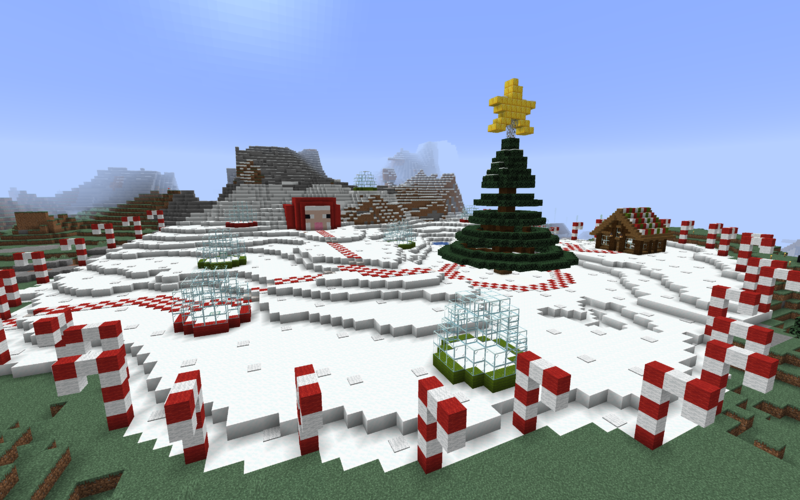

LET'S REVISIT

Before Season One
The Baked Potatarium is a unique project that pulls it's origins from multiple different places. Officially, The Baked Potatarium as we know it originated as "The Nutty Terrarium" and was launched by Buggolos on April 16th, 2019 within his Discord. It was not originally whitelisted, leading to many players logging in just once or twice, some even leaving before other key players would arrive. The server was then handed to Crutionix and rebranded as The Baked Potatarium.
Many of the server's key members including; FriedOrange, Crutionix, Eternaldoom, FusionEdge, Glowe, Lakoola and OnyonSwomp formerly participated in a multi-season server hosted by Crutionix called "Grimsever" which dates back to 2014. And some of these players were also a part of HitCraft, as early as 2012.
April 2019
Season One officially began with very low expectations on April 16, 2019. In the first weeks of the server, the following players made their way onto the server:
Noteable Events for April:
May 2019
May was a big month for TBP due to a single event that would see thousands of members of the general public spectating TBP for the first time. On May 18th, popular YouTube and Twitch streamer, xisumavoid, would raid Crutionix during a building livestream. Some season regulars would be introduced to TBP from this event, including
Noteable Events for April:
June and July 2019
During June, Crutionix became the self appointed spawn manager. Spawn was fitted with new buildings, aesthetic appeal, crop farms and more. The build palette and design was refined and narrowed and many buildings were renovated as a result of this, some even destroyed and replaced if they were unused or abandoned. July also saw the server become the intellectual property of Crutionix Media Group, as "The Baked Potatarium" name and brand was established.
Spawn as screenshotted in June 2019:
August and September
In Early August, many players returned to the server after a brief hiatus. These players included OnyonSwomp and Mewffin who established the Mewffin Isles and Onyon Bay, around 3000 blocks from World Spawn. In the coming weeks, many other server players would create holiday homes at the Mewffin Isles. It was considered to be the de facto new spawn village for a while, with many players migrating there. The Mewffin isles was also the only other place in the world that would receive a polling booth location.
After being dormant for many months, the spawn village was opened up to player owned stores in the newly built mall, underneath the original villager trading markets built by Crutionix and H4v0c21. Additionally, FriedOrange would complete the super smelter upgrade project in early September.
The smelter interface, screenshotted in September 2019:
October 2019
October 1 marked the beginning of the 2019 Halloween Event on the server. The event
included a building competition to encourage server members to participate in making the area look on theme. The Halloween Event included the first ever teleport to an open world location (previously, teleports had only been used for polling locations) and also included the first custom NPC villagers with custom trades.
The official Halloween Resource Pack was released for use during the event.
Aside from the event, the following notable events happened during October:
Solanum as screenshotted in October 2019:

November and December
In December, the server hosted it's second server wide event: Holiday Hills. The Holiday Hills was established close to spawn, as a part of the stone mountains was transformed into a Christmas themed area.
A snow globe decoration competition took place at Holiday Hills throughout the duration of the event. The competition was won by Crutionix. During the event you could win custom tokens that could be traded for unique items.
Outside of the event, the following happened in November and December:
An aerial screenshot of the Holiday Hills area, before the event began:
January 2019 until March 2020.
In the lead up to the 1 year anniversary of TBP, many players had stopped playing due to burnout or end goal completion. With no new events in sight, few projects were worked on including the Solanum Railway and Veridia. In February, the Solanum Adventure Railway was cancelled after only one stop was established. The railway would function, taking players from Solanum to Ruleskeid, and then to the junction depot near the bridge to FriedOrange's base.
In March 2020, the global pandemic known as COVID-19 caused lockdowns across the country. Because of this, Season 2 of TBP was expedited as players were looking for something to do. Season 2 launched two weeks earlier than planned on April 3rd at 12pm AEST.